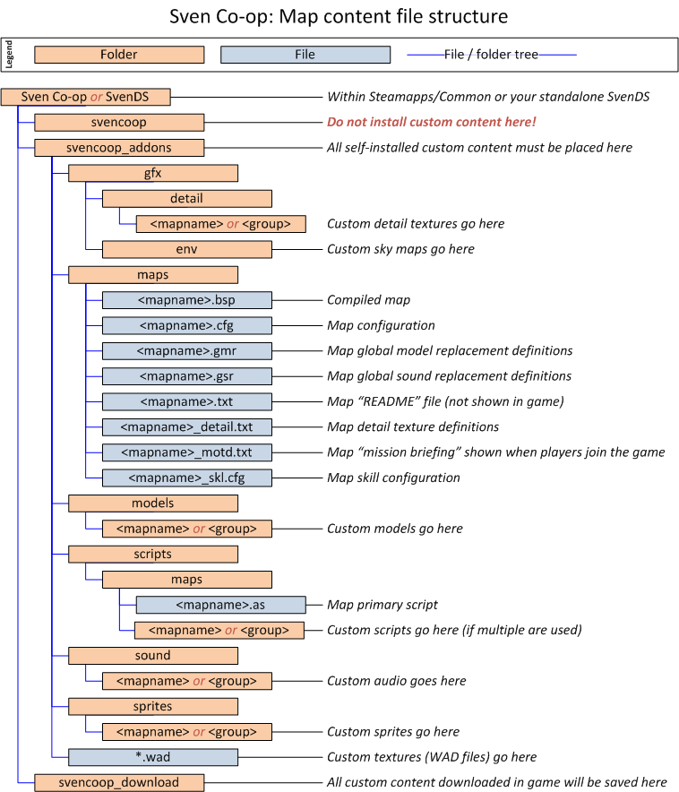

Running a server (basic installation)
This section will guide you through the basic installation of Sven Co-op's dedicated server.
Contents
- Which package is right for me?
- Installation: Steam tool
- Installation: Standalone application
- Starting a server: Graphical
- Starting a server: Console
- Configuration
- Connectivity
- Installing custom maps
- Advanced topics
Which package is right for me?
Our dedicated server package comes in two forms both with different benefits. One is distributed to you through your Steam client (the same application you use to launch games in Steam) as a tool, and the other is distributed through Steam's console client (SteamCMD ) as a standalone application.
Here are the basic differences and benefits of them both:
| Steam tool | Standalone application |
|---|---|
| Distribution | |
|
|
| Benefits | |
|
|
| Drawbacks | |
|
|
Once you have chosen a package follow the instructions for the Steam tool or standalone application.
Installation: Steam tool
Our dedicated server package in Steam will allow you to effortlessly install a server attached to your Steam account. It's quick, easy, and should be up and running as fast as you can download it. This is an ideal approach for temporary / part-time servers. You will require a valid installation of Sven Co-op to continue.
Instructions are as follows:
- Launch Steam and log in.
- In the main Steam screen hover over Library and click Tools.
- Scroll down the list of available tools until you see Sven Co-op Dedicated Server.
- Double-click the package to install it.
- Follow the on-screen installation.
That is it. You should now have the dedicated server tool ready to launch. Double-click the tool in the library and select Play Sven Co-op Dedicated Server to launch a server with a graphical interface.
Installation: Standalone application
Our dedicated server package is also available as a standalone package available via the SteamCMD tool. Though it requires further knowledge to install and use you will benefit from a server that doesn't depend on your Steam client, can be run as a console application, and even be run as an unattended system service. Permanent / full-time servers should opt for this approach. You will also NOT require an existing Sven Co-op installation to continue.
 Do not use this method of installation if you are unfamiliar with some basic server administration concepts such as using a command prompt or terminal environment, and reading/writing configuration files.
Do not use this method of installation if you are unfamiliar with some basic server administration concepts such as using a command prompt or terminal environment, and reading/writing configuration files.
Instructions are as follows:
- Open a command prompt or terminal environment on your system.
- Download and install SteamCMD .
- Download our dedicated server package with the following command:
steamcmd +login anonymous +force_install_dir "C:\SvenDS" +app_update 276060 validate +exit
Replace the path C:\SvenDS with a location to your preference. - Wait for the package to download and validate.
Once it has finished you can use the SvenDS.exe executable to launch a server. Launching without any arguments will start it with a graphical interface, or if you specify the -console argument it will start with a console interface.
The same command is used to update the server application too, however be sure you have no server instances running or the update will fail.
Starting a server: Graphical
To start a server with a graphical interface simply launch the Sven Co-op Dedicated Server tool in your Steam tools library (for Steam tool installations) or launch the SvenDS.exe executable (for standalone application installations). You will be presented with a small form asking for some options.
- Game: This will always be Sven Co-op, unless you're running a mod on our engine.
- Server Name: This is the name of your server as shown in the game server list and on the score board in game.
- Map: Choose a map to run immediately with your server. Osprey is a good choice if you want to get players in quickly, or Stadium4 for a gathering place for a group of friends.
- Network: Internet means your server will be available to anyone with a valid Steam subscription, and players authenticate with their Steam ID number. LAN means your server will be available only to your local network, and players authenticate with their IP address.
- Max. players: The maximum number of players that can be on your server at a time (2-32). Most maps become overcrowded with more than 12 players.
- UDP port: The network port number for your server to listen on. If unsure leave as default (27015).
- RCON password: The password used to remotely access the command console for your server. You should not tell anyone this password as it allows them to control your game server. It must be at least 3 characters consisting of only alpha-numeric characters. If you don't want to use this feature, just do a keyboard mash to input any random string.
- Secure (Valve Anti-Cheat): Players will be scanned for game cheat applications as they join your server. Players caught and blacklisted by Valve's Anti-Cheat system will not be allowed to play on your server. You should leave this enabled in most situations.
Once you're ready click Start Server, it will take a moment to begin. All of these options will be remembered for the next time you start a server.
You will then (hopefully) be presented with a larger form depicting a tabbed management interface for your game server.
- The Main tab tells you a bit about your server (which game, how many players are on, how long it's been running) along with changing some basic settings:
- Server Name, Network, and RCON Password As in the launch options form.
- Map: Immediately change to a new map from a list.
- Player Password: Allows you to set (or unset) a password required for players to join your server (making your server private).
- Map Cycle: A graphical tool to build a map cycle to run on your server.
- The Configure tab allows you to change a broader set of options. Not all of these will be saved after you start a new server.
- The Statistics tab shows you a graph about how well your server is performing such as CPU load, frame rate (tick rate), and network data.
- The Players tab shows you a list of players currently connected, some information about them, and the ability to kick/ban players.
- The Bans tab shows you a list of currently banned players and IP addresses, editing the bans list, and importing/exporting the list to a file for backup.
- The Console tab shows you a simple textual representation what is happening on your server, along with the ability to submit commands to your server. You will need to look at this output if you need to find out why something has gone wrong. Avoid entering any commands you aren't sure of what they will do, particularly those given to you by other people you don't fully trust.
There is really little more I can tell you about running a server in graphical mode. You can close it down any time you like, then any players connected will be returned to the main menu with a message that the server is shutting down.
Starting a server: Console
This option is only available to the standalone application. You will need to open a command prompt or terminal environment on your system then change the working directory to your Sven Co-op dedicated server installtion (usually C:\SvenDS).
Next you need to build a command to launch your server. The following list of arguments and parameters will determine how your server starts. Be sure to split them up with a space. Pay attention to those beginning with a hyphen (arguments) and those beginning with a plus (parameter), as they will not work with the wrong symbol. Sections highlighted before the colon are the parts you type, and underlined sections are parts you change.
- SvenDS: The name of the application, does not need to have ".exe" on the end.
- -console: Required, or your server will start in graphical mode.
- -game modname: Only needed if you are running a mod on our engine, otherwise ignore this.
- +ip ipaddress: Only needed if your computer has more than one IP address assigned to it, and you need to specify which address to listen on.
- -port 27015: Chooses the network port to listen on, usually 27015 unless you're running more than one server on the same IP address.
- +maxplayers 12: The maximum number of players that can be on your server at one time (2-32). It will be 12 if you do not specify this.
- +map _server_start: Specify which map to launch the server on. If you do not specify this your server will remain stuck in an un-connectible state!
- +log on: Start a log file for the server console (recommended).
Here is a simple example to start an 8-player server on map stadium4 listening on port 27015 with logging enabled:
SvenDS -console -port 27015 +maxplayers 8 +map stadium4 +log on
Configuration
Once you have got your first server running you will likely want to change the configuration of it in a way that it's saved permanently, and across map changes.
We will focus on just the basic configuration options here found in the default server.cfg file. Edit this file with a plain text editor (like Notepad or nano). You can modify this file while your server is running, then any saved changes will take effect on the next map.
| Setting | Default value | Description |
|---|---|---|
| hostname | Sven Co-op v5.0 server | The name of your server as players see it. This line comes first to minimize the chance of your server appearing as the default name Sven Co-op. Try to limit yourself to 40 characters on this. |
| log | on | Switch on logging of events on your server. There is little reason to turn this off unless you don't require logs. I recommend you specify this in your command parameters instead to lower the number of log files created. |
| rcon_password | Empty | Password used for accessing the server console remotely. Use a password strength meter to help you build a good password. Only your trusted server administrators should know this as it allows unlimited access to your game server. If you leave this blank, remote console access will not be available (don't worry -- it won't allow everyone to use RCON without a password). |
| sv_password | Empty | Password used for players to join your server. Leave blank if your server is public. |
| sys_ticrate | 128 | The maximum number of frames/second your server will process. We have discovered that setting this using base 16 increments (64, 128, 256, etc) provides a smoother base 10 tick rate (50, 100, 200, etc) than setting the number at base 10 directly. Setting this above roughly 250 is ridiculously stupid, and your players will just complain about lag when your server fills up. Frame rates too high will also have a negative effect on physics and NPC movement, and extreme frame rates (over 500) will cause many brush entities to cause crush damage when nothing is blocking them. |
| deathmatch | 1 | This is essential for the intended game play of Sven Co-op. Do not change this, and do not use the coop setting. |
| decalfrequency | 30 | The time (seconds) a player must wait before making their spray again. 0 will remove this delay, but is not recommended. |
| hpk_maxsize | 2 | The size limit (megabytes) of the file that stores uploaded sprays. The oldest sprays are removed to make way for new sprays. |
| pausable | 0 | Determines whether the game on your server can be paused by anyone. This is never recommended on public servers. |
| sv_allowdownload | 1 | Allow players to download custom content from your server. |
| sv_allowupload | 1 | Allow players to send custom sprays to your server. |
| sv_region | 255 | The region your server is in. This is used in Steam's server browser, so players can look for servers near by.
|
| sv_voicecodec | voice_speex | The voice codec to use. Currently only voice_miles and voice_speex are available. There is no reason to revert to voice_miles as the quality is terrible, and throughput consumption is more than double used by voice_speex. |
| sv_voicequality | 5 | The voice quality for voice_speex.
|
| sv_voiceenable | 1 | Allow players to use voice communication. |
| mp_notimelimit | 0 | Disable a map's mp_timelimit setting allowing it to run indefinitely. The map can still end on empty servers due to mp_timelimit_empty. |
| mp_telefrag | 1 | Players will kill someone if they are teleported inside them. Disabling this will result in players piling up inside each other unable to move. |
| mp_timelimit | 60 | Map changes after this amount of time (minutes) if the map hasn't been completed already. |
| mp_timelimit_empty | 10 | Automatically end the map and move on to the next if the server has been empty for this many minutes (stops maps setting infinite time limits on empty servers). Set to 0 to disable this feature. |
| mp_weaponstay | 1 | Weapons can be picked up multiple times, with the exception of miniguns. Disabling this will result in a couple of players taking all the weapons leaving others with nothing. |
| exec | banned.cfg | Loads the list of banned Steam IDs. |
| exec | listip.cfg | Loads the list of banned IP addresses. |
If you wish to see a vastly more complete set of configuration options, please see the extended server configuration guide.
Connectivity
Once you have got your server up and running and you want players to connect to it over the Internet it is likely that your server will be behind a firewall, a router with a firewall, or a router using network address translation (NAT). This is likely to mean you will require some additional configuration of one or more of these in order to make your server world visible.
The most likely scenario particularly for game servers at residential properties is a router using network address translation. This is where one public IP address is assigned to a NAT router at home, of which is then shared between one or more computers/devices using a private address network. The easiest way to determine if this is the case for you is to do the following:
- Open a command prompt or terminal environment on your system.
- Submit command: ipconfig (on Windows) or ifconfig (on Linux).
- Take note of the numbers to the right of the IPv4 Address row.
Ignore any network device that shows one of these address ranges, because they are not connected to the Internet anyway:
- 0.0-255.0-255.1-254.
- 127.0-255.0-255.1-254.
- 169.254.0-255.1-254.
Check if your IPv4 address is within the following ranges:
- 10.0-255.0-255.1-254.
- 172.16-31.0-255.1-254.
- 192.168.0-255.1-254.
If this is the case you are definitely behind a router using NAT. You will need to configure port forwarding on your router in order to make your game server world visible. Because there are literally thousands of different home router models worldwide we are not going to guide you on how to do this. Instead visit www.portforward.com to find a set of instructions specific to your router. You will also need administrative permission on your router in order to make this adjustment, so if it isn't yours ask for permission first.
Our server application only uses the following transport ports. You can amend these using the corresponding command line parameter.
| Port | Protocol | Parameter | Description |
|---|---|---|---|
| 27015 | UDP | -port | Game & content transfers traffic |
| 27015 | TCP | -port | Remote console (RCON) traffic |
| 26900 | UDP | -sport | Valve anti-cheat (VAC) service traffic (auto-increments from default if taken to the next available port) |
Installing custom maps
Your players will inevitably get bored with the official set of maps provided. You will almost certainly want to install some of the many additional maps around to improve the experience of your game server.
Installing custom maps is a simple process providing map artists follow the map distribution guidelines. You will have downloaded a map as a file containing the map contents typically as a ZIP, RAR, or 7Z archive. Maps are rarely distribute maps as a standalone BSP file or as a bunch of unpacked files.
You can use a free utility such as 7-Zip to open most of the archive formats around today. This runs on both Windows and Linux and is provided for free of charge.
When you open the archive you should see a set of folders that could be gfx, maps, models, scripts, sound, and sprites. It's also likely you'll see a bunch of WAD files here too. If this is what you see you will need to extract all of these to your server's svencoop_addons folder.
- Do not extract any unofficial resources directly into the svencoop folder. To help keep your game files clean, use the svencoop_addons folder. The game engine is perfectly capable of loading maps and their contents from this location.
- If there is a scripts folder included take a look inside before extraction. There should only ever be a maps folder inside this. Anything else should be treated as suspicious and not extracted, or deleted after extraction.
- If there is only a svencoop folder inside the archive, you need to enter this folder before extraction. This shows the map artist has not followed our current guidelines on map distribution.
 If there is only a BSP file (and maybe a couple of TXT/CFG files along side it) this means the map doesn't have much custom content. These files should be extracted to the maps folder within the svencoop_addons folder.
If there is only a BSP file (and maybe a couple of TXT/CFG files along side it) this means the map doesn't have much custom content. These files should be extracted to the maps folder within the svencoop_addons folder.
This diagram shows how custom map content should be laid out in your game.
Advanced topics
This page only covers the basic installation and configuration of a single server. Our advanced topics guide covers a range of more in-depth tasks such as configuration profiling (running multiple servers on a single installation), running a server as a system service, and setting up a fast in-game content server.